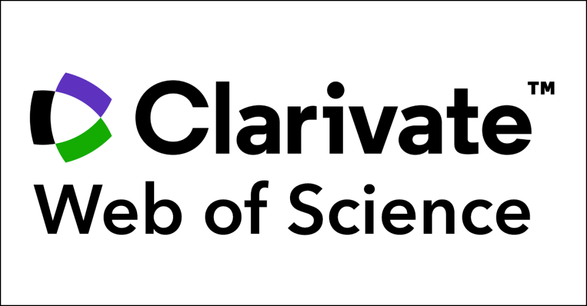

Research Skills, Method & AI
Session 3: Literature Review & Theoretical Framework
L. Liu & Dr Mo Cheded
KEDGE Business School
Materials by Dr. Mohammed CHEDED; Adapted by Lihua Liu with AI Assistance (ChatGPT & Codex).KEDGE Educational Use Only; Reuse Requires Permission.
Today's Agenda
Find
Discover academic literature
Evaluate
Assess academic sources
Synthesize
Connect ideas and arguments
Build
Develop a theoretical framework
Cite
Academic Citation and Integrity
Apply
Practice with your research topic
Today's Agenda
Find
Discover academic literature
Evaluate
Assess academic sources
Synthesize
Connect ideas and arguments
Build
Develop a theoretical framework
Cite
Academic Citation and Integrity
Apply
Practice with your research topic
Where Does a Literature Review Fit?
A simplified research report structure — formats vary across disciplines and publications.
Introduction
Literature Review
Often a substantial section
Methodology
Results
Discussion
Conclusion
The literature review establishes the foundation for your research.
What Is Inside a Literature Review?
Review
What have previous researchers discovered?
Synthesize
How do their findings and arguments connect or differ?
Identify Gaps
What remains unknown, and how does your research fit in?
A literature review is more than a collection of article summaries.
Where Can We Find Academic Literature?
Academic Sources
Journal articles, Academic books, Conference papers, Dissertations
Our main focus
Professional Sources
Government reports, Industry reports, Official statistics
General Sources
News articles, Websites, Blogs, Social media
What Is an Academic Paper?
A formal research publication written by researchers to share their findings and ideas with the academic community. Academic papers contribute to scholarly knowledge and play an important role in academic careers.
Not every reliable source is an academic source.
Where Should We Search for Academic Papers?

Web of Science
Access via KEDGE Library
A scholarly database for discovering research publications and exploring citation relationships.
- Structured searching
- Citation tracking
- Research filters

Google Scholar
A free search engine for finding academic publications across disciplines.
- Easy discovery
- Broad coverage
- Cited by
Access tip: KEDGE students can access Web of Science through KEDGE Library. Full-text availability depends on institutional subscriptions.
From Research Question to Keywords
Research Question — From Session 2
“How do winemaker gender cues influence consumers' evaluations and purchasing decisions in the wine market?”
Identify the main concepts and related keywords
Concept 1: Winemaker Gender Cues
- Winemaker gender
- Gender stereotypes
- Gender signals
- Gender cues
Concept 2: Consumer Responses
- Consumer evaluation
- Purchase intention
- Buying behavior
- Consumer perception
Research question → Main concepts → Alternative search terms
How Do We Combine Keywords?
Boolean operators help us control which articles appear in our search results.
AND
Narrows results
Find articles containing both concepts.
OR
Broadens results
Find articles containing either term (or both).
NOT
Excludes results
Exclude articles containing a particular term.
Example Search String
("winemaker gender" OR "gender cues") AND ("consumer evaluation" OR "purchase intention") AND wineHow Can We Refine Our Search?
Two simple techniques help us make academic searches more precise and flexible.
Quotation Marks
Without Quotation Marks
gender stereotypesWords can appear separately or together.
With Quotation Marks
"gender stereotypes"Words must appear together as an exact phrase.
Useful when searching for a specific concept or established expression.
Truncation
Use a wildcard to capture different word endings.
Search Term
consumer*Can Match
- consumer
- consumers
- consumerism
Useful for finding related word forms without typing each one separately.
Remember: Search operators vary across platforms. Truncation with * is supported in Web of Science, but Google Scholar handles wildcards differently.
Let's Find Academic Articles!
Turn your research question into a real academic literature search.
Expected Output
Your search string + an initial collection of academic articles (titles and links/DOIs).
Next: How do we decide which articles are worth keeping?
How Do We Evaluate Academic Articles?
You have found academic articles. Now, which ones should you keep?
Organize
Sort search results by relevance or date.
Check
Examine the journal, authors, and publication details.
Screen
Read the title, abstract, and keywords.
Decide
Keep, reconsider, or exclude the article.
Our goal: Identify promising articles for further reading — not evaluate every detail of the research yet.
How Can We Organize Search Results?
Web of Science lets us change the order of search results to support different research goals.
Sort by Relevance
Prioritize articles that Web of Science considers most closely related to your search terms.
When to use it
When exploring literature related to your research question.
Sort by Newest First
Display the most recently published articles at the top of the results.
When to use it
When looking for recent research and emerging developments.
Remember
A higher position in the search results does not necessarily mean an article is more relevant or higher quality. You still need to evaluate it.
How Can We Check Source Credibility?
Use five questions to make an initial assessment of an academic source.
Who
Who wrote it?
Identify the authors and their affiliations. No need to assess their reputation yet.
Optional at this stage
What
What does it claim?
Identify the research purpose and main findings.
Where
Where was it published?
Check the journal and publisher.
Why
Why was it written?
Understand the research objective and intended contribution.
How
How was it conducted?
Consider the research methods and supporting evidence.
At the screening stage, start with the publication information and abstract. Some questions require reading the full article.
Does the Journal Matter?
The journal where an article is published can help us assess its academic credibility.
Why Check the Journal?
- Established academic journals often use peer review.
- Journal reputation provides an initial credibility signal.
- A reputable journal does not guarantee that every article is suitable for your research.
Examples of Academic Journals
- Journal of Marketing
- Journal of Marketing Research
- Journal of Consumer Psychology
- Journal of Business Research
- Décisions Marketing
- Academy of Management Review
- Journal of Management
- Management Science
- Management Decision
- Finance Contrôle Stratégie
- Journal of Business Ethics
- Business Strategy and the Environment
- Business Ethics Quarterly
- Organization & Environment
- Ecological Economics
Illustrative examples, not an exhaustive or exclusive list.
Remember
Journal reputation is only one indicator. Always check whether the article is relevant to your research question.
How to Screen an Academic Article
Quickly assess whether an article is relevant before reading it in detail.
Title
Does the topic match your research question?
Publication Information
Which journal published it, and when?
Abstract
What did the researchers investigate, how, and what did they find?
Keywords
Which concepts overlap with your topic?
First screening: Title → Publication information → Abstract → Keywords → Initial decision
Let's Look at a Real Academic Article
 Click to enlarge
Click to enlargeAfter Screening: What's Next?
Decide what to do with each article based on its relevance.
Keep
Continue to detailed reading.
Uncertain
Check more information.
Exclude
Move to the next article.
Remember: Keeping an article at this stage means it is worth reading further, not automatically including it in your final literature review.
How to Read a Selected Academic Article
Once an article passes initial screening, explore its relevant sections to understand and use its findings.
Objectives
Abstract / Introduction
Research Questions
Introduction / Literature Review
Theories & Concepts
Literature Review
Methods
Methodology
Findings
Results
Recommendations
Discussion / Conclusion
Detailed reading → Understand the study → Take notes → Compare with other studies
Summary vs. Synthesis
A literature review connects research findings rather than simply listing studies.
Summary
Describes each study separately.
Synthesis
Combined Understanding
Agreements · Differences · Patterns
Connects findings to develop an argument.
Key idea: Summary tells us what each study found. Synthesis explains what the studies tell us together.
From Summary to Synthesis: Example 1
A very serious investigation into a mysterious everyday problem…
01 The Mystery
Where are the missing clothes?
Summary — What Each Source Says
Her boyfriend says she already owns 100 outfits.
Her best friend says she keeps buying new clothes.
She says none of her clothes match today's mood.
Three observations, reported separately.
02 The Explanation
Why do girls say they have nothing to wear when their wardrobes are full?
Synthesis — What the Evidence Suggests
Although her wardrobe contains numerous outfits and continues to expand, her dissatisfaction suggests that having ‘nothing to wear’ may reflect a mismatch between available clothing and her desired self-expression, rather than an actual shortage of clothes.
Connect observations, identify the contradiction, and develop an interpretation.
Summary reports what each source says. Synthesis explains what the sources suggest together.
From Summary to Synthesis: Example 2
How can we connect findings from different studies?
Three Hypothetical Studies
Study A
Gender cues influence product evaluations.
Study B
Gender cues affect purchase intentions.
Study C
The effect depends on consumers' stereotypes.
Connect the findings
Synthesized Argument
Research suggests that gender cues influence consumer responses, including product evaluations and purchase intentions. However, these effects may depend on consumers' existing stereotypes.
Notice: We combined a common finding with a qualifying condition to develop one coherent argument.
How Do We Synthesize Literature?
Turn individual studies into a connected understanding of your research topic.
Read
Understand selected studies.
Take Notes
Record useful findings.
Compare
Find similarities and differences.
Connect
Identify patterns and relationships.
Conclude
Develop an overall argument.
Key idea: Synthesis is not a single step. It develops through reading, comparing, and interpreting research.
How Can We Take Useful Research Notes?
Record information consistently so you can compare studies later.
Example: Literature Matrix
Illustrative| Study | Research Focus | Method | Main Finding |
|---|---|---|---|
| Study A | Gender cues | Experiment | Affect evaluations |
| Study B | Gender cues | Survey | Affect intentions |
| Study C | Stereotypes | Experiment | Moderate the effect |
Record Sources
Authors, year, title, DOI.
Write in Your Own Words
Summarize findings and ideas.
Track Quotations
Use quotation marks and page numbers.
Key idea: Good notes make it easier to identify patterns, differences, and research gaps.
How Can We Connect Different Studies?
Identify relationships across the literature to develop a broader understanding.
Compare
Do the studies reach similar conclusions?
- Agreement
- Contradiction
Complement
Do the studies examine different aspects?
- Research focus
- Methods
- Contexts
Extend
Does one study build on another?
- New concepts
- Explanations
- Conditions
Identify Gaps
What remains insufficiently understood?
- Overlooked questions
- Unclear findings
- Limitations
Remember: Studies can relate in multiple ways. Look beyond agreement and disagreement.
How Can We Visualize Research Literature?
Visual tools help organize studies, identify connections, and develop arguments.
Mind Mapping
Group studies into themes and explore connections.
Argument Mapping
Connect evidence to claims and conclusions.
Remember: Visualizations help you think and organize; they do not replace critical analysis.
The Wrong Approach: Listing Studies One by One
Listing Studies One by One
“Author A found… Author B found… Author C found…”
Simply listing studies without explaining their connections or relevance does not build a coherent argument.
How to Organize a Literature Review
Funnel Structure
Move from the broader research field toward a specific issue and research gap.
Focus: How the discussion progressively narrows.
Thematic Structure
Organize the literature around key themes, concepts, or debates.
Focus: How different studies connect around common ideas.
A literature review should build an argument, not just report what each author said.
The Funnel Structure: From Broad to Specific
Guide your reader from established knowledge toward the specific research gap your study addresses.
Broad Research Field
Introduce the general topic.
Existing Literature
Discuss what we already know.
Specific Research Focus
Narrow to a particular phenomenon.
Research Gap
Identify what remains unclear.
Your Study
Explain what you will investigate.
Start with what is known
Establish the academic context using relevant research.
Connect and narrow
Move between related ideas to develop a focused argument.
Justify your study
Show what is missing and why your research matters.
The funnel is a writing strategy, not a rigid paragraph-by-paragraph formula.
A Real Marketing Example: From Influencing to Deinfluencing
How does a published study move from a broad research field to a specific research gap?

Follow the Writing Logic
Broad Research Field
Introduce influencer marketing.
Existing Practices
Explain how influencers recommend products.
Introduce a Contrast
Influencers may also discourage purchases.
Narrow the Focus
Define deinfluencing as a distinct phenomenon.
Identify the Research Gap
Show the limited academic attention to deinfluencing.
Conceptual progression, not exact paragraph order. The research gap is introduced relatively early in the article.
Notice how the authors connect established knowledge to a specific research opportunity.
How to Organize a Literature Review
Funnel Structure
Move from the broader research field toward a specific issue and research gap.
Focus: How the discussion progressively narrows.
Thematic Structure
Organize the literature around key themes, concepts, or debates.
Focus: How different studies connect around common ideas.
A literature review should build an argument, not just report what each author said.
The Thematic Structure: Organizing Literature by Ideas
Organize existing research around key themes, concepts, or theoretical perspectives rather than individual articles.
How Does Thematic Organization Work?
Identify Themes
Find recurring concepts, debates, or theoretical perspectives across the literature.
Group & Synthesize
Bring related studies together, comparing their findings and arguments.
Build an Argument
Explain how the themes connect and contribute to your research question.
Each theme should synthesize relevant studies and contribute to a coherent overall argument.
From Literature Review to Theoretical Framework
A real example: Authenticity in virtual influencer marketing

How the Theoretical Background Is Organized
Authenticity in Influencer Marketing
A multifaceted construct
Anthropomorphism in VI Marketing
Humanlike qualities and consumer perceptions
Cognitive Dissonance Theory
Explaining the authenticity–credibility paradox
Key Insight
Different concepts and theories contribute to one coherent theoretical argument.
Look closer: Can you identify the funnel structure within Section 2.1? Follow the red underlines.
Explore Sections 2.2 and 2.3 in the original paper to see how the authors develop the other theoretical elements.
Building a Strong Literature Review
Four principles to remember when developing your literature review.
Synthesize, Don't List
Compare and connect findings to develop an argument, rather than reporting studies one by one.
Choose a Clear Structure
Use a funnel to move from broad to specific, or a thematic structure to organize ideas and debates.
Be Critical and Selective
Prioritize relevant studies, evaluate different perspectives fairly, and avoid unsupported claims.
Build Toward Your Research
Connect concepts and theories, identify what remains unknown, and explain how your study contributes.
A literature review should not simply describe what we know — it should explain why your research is needed.
How to Use Sources Without Plagiarism
Three ways to use others' work — and common mistakes to avoid.
“Social media influencers can affect consumers' purchase decisions by increasing trust in recommended products.”
Smith (2024), p. 15 — illustrative source only
Social media influencers influence buying decisions by building trust in promoted products.
Consumers may be more willing to buy products when they trust the influencers recommending them (Smith, 2024).
Smith (2024) states that social media influencers can affect consumers' purchase decisions by increasing trust in recommended products.
Smith (2024) states that “social media influencers can affect consumers' purchase decisions by increasing trust in recommended products” (p. 15).
Influencer marketing shapes consumer behavior.
Influencer recommendations can influence consumer purchasing behavior (Smith, 2024).
Whether you paraphrase, quote, or summarize, you must acknowledge the original source.
Two Ways to Cite a Source
APA uses two common ways to include authors in your writing.
Parenthetical Citation
Influencer marketing can affect purchase decisions (Smith, 2024).
The author and year appear at the end of the idea.
Narrative Citation
Smith (2024) argues that influencer marketing can affect purchase decisions.
The author's name is part of the sentence.
Both formats give credit to the same source.
All names and publication details are illustrative examples.
APA Citations: How Many Authors?
Citation format changes depending on the number of authors.
| Authors | Parenthetical | Narrative |
|---|---|---|
| One | (Smith, 2024) | Smith (2024) |
| Two | (Smith & Lee, 2024) | Smith and Lee (2024) |
| Three or more | (Smith et al., 2024) | Smith et al. (2024) |
For three or more authors, use “et al.” from the first citation.
All names and publication details are illustrative examples.
Direct Quotations: Include a Page Number
When using an author's exact words, show readers where to find them.
“Influencers can shape consumer preferences” (Smith, 2024, p. 15).
Smith
Author
2024
Year
p. 15
Page number
Direct quotations require quotation marks and a page number (or another appropriate locator).
All names and publication details are illustrative examples.
APA Reference List: Giving Full Credit
An in-text citation points to a source. The reference list tells readers where to find it.
Influencer marketing can affect purchase decisions (Smith, 2024).
Smith, J. (2024). The influence of social media on consumer purchasing decisions. Journal of Consumer Research, 15(2), 100–115.
List references alphabetically by the first author's surname. Include a DOI URL when available.
Get APA References from Google Scholar
Watch the demonstration, then try it with your own articles.
One Article
Get the APA reference for a single academic article using Google Scholar's Cite feature.
Search → Cite → APA → Copy
Multiple Articles
Save several articles to My Library and export their citations together.
Save → My Library → Select → Export
Bulk export may require a reference manager, such as Zotero, to generate a formatted APA reference list.
Google Scholar saves time, but always check the accuracy and formatting of exported references.